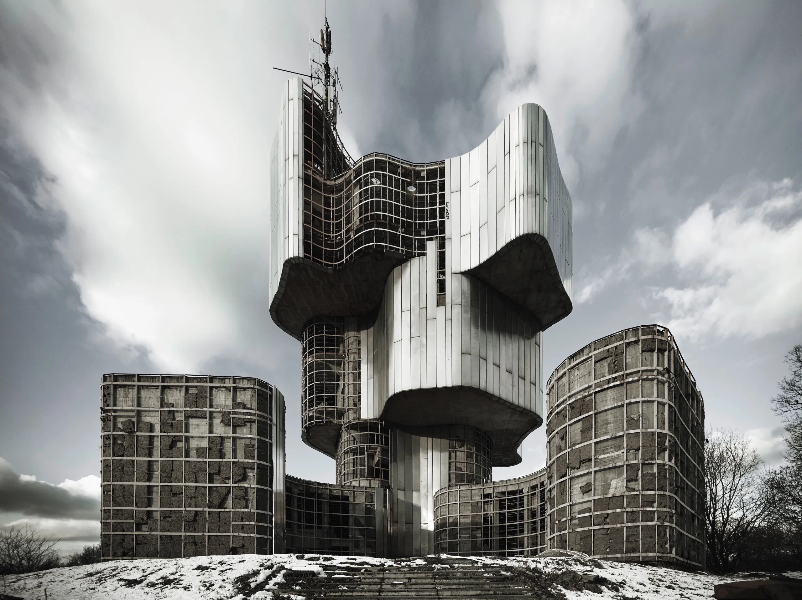
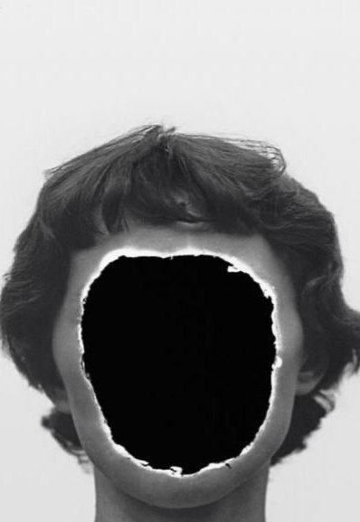
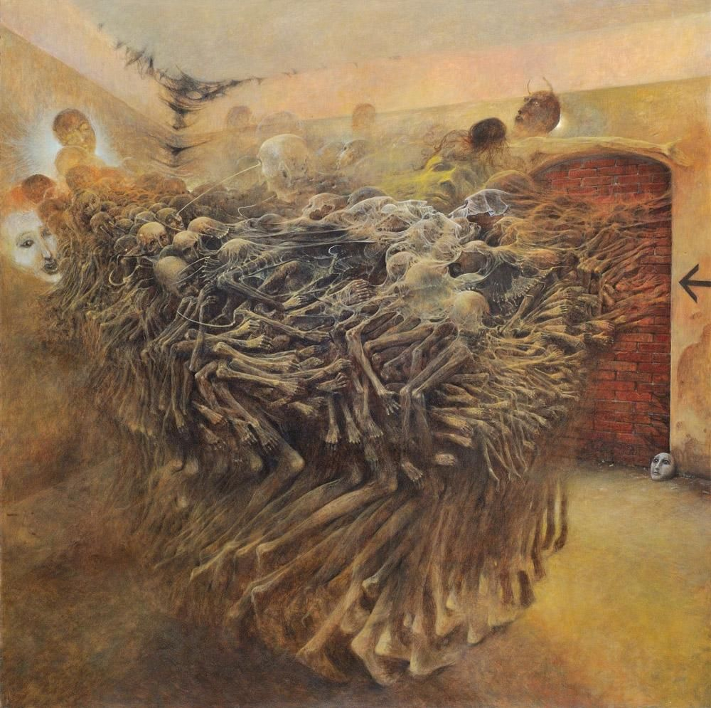
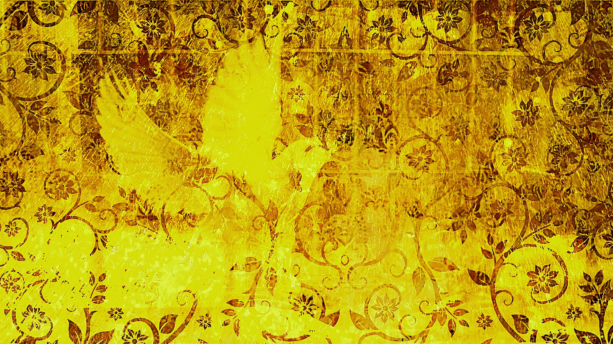

“The statistics on sanity are that one out of every four people is suffering from a mental illness. Look at your 3 best friends. If they're ok, then it's you.” (Rita Mae Brown)
Our world is one where humans no longer have to fight to survive, you just go to work and contribute to society, which you get money from to buy food, water and everything you really need. One of the few "problems" that still affect modern humans is mental health. Generally we do not understand the mind very well, it's probably one of the most mysterious things to humans and it's inside your own body. A large part of todays life is coping with living, with suicide rates on the rise and more and more people being diagnosed with issues and prescribed drugs to manage them. Most people, even if they don't directly have mental illness are impacted by it, as 1/4 people have some kind of mental health condition. Depression is a very common thing that very many people are being treated for. Taking care of your mind is one of the most important things for modern humans, and one of the biggest ways we do this is with art. Art can really be anything, music, writing, poems, architecture. Art, in my experience for most people is about expression and trying to get how you feel out into the world.
As the world has evolved so have we, for better or worse, things like war monuments to fallen people, illustrates how much art can mean even to the average person. Yugoslavian war monuments adopted a "Brutalist" kind of style during, and after the 2nd world war, instead of just making a giant statue of a soldier, they would make monuments which were huge concrete structures, usually towering over any person who views it, made from vague shapes and buildings, and really representing the resistance against Nazi occupation during World War II. Yugoslavia was occupied by a lot of parties, off and on through these wars. The really core part of the culture, and lives of people who call yugoslavia home were definitely impacted, but they continued to preserve through many different issues.
These Yugoslavian war monuments are something that mean a lot, to a lot of people, a giant monolith to the violence and suffering experienced during the second world war.
Zdzislaw Beksinski was a polish painter and photographer, influenced heavily by the aftermath of the war, and the soviet occupation of his country. Zdzislaw Beksinski had no formal training in his art, but as he learned the history and influence of architecture and art, he started making photography, very evocative and dream-like. In this time the goal of anyone who wanted to be taken seriously, was to make pictures of as much realism and just presenting the world as it is, gorgeous landscapes, anything to show the world how it looks. Zdzislaw Beksinski did not want to properly represent anything, people even calling his art "anti photography"
Today, letting anyone express whatever they want is what art is for, and you should not label things like this as not art because you don't like it. Which is definitely a prevalent issue with “modern art” which through the course of my life, many people have said they find pointless and unskilled. Really focusing on how much skill a painting, photo, or song might take, just so see bananas taped to a wall sell for ungodly amounts of money as so called “modern art”. You can call this not art, but by definition it is, just because a movie is really bad and has no effort in it does not make it not a movie, although nobody would watch that movie anyway.
Zdzislaw Beksinski did not like to name art, because he wanted people to interpret his works however they wanted, famously saying "If I wanted to say something' I would write it down or say it". Zdzislaw Beksinski's art is, in my opinion, stunning, and speaks for itself, in different ways to different people. His art was heavily influenced by war and mostly something that a viewer could look at for hours, complex landscapes or architecture typically with creatures of some kind, usually horrifying and dreamlike in nature. Zdzislaw Beksinski wanted his paintings to stand on their own, just as an image to look at not any specific meaning or value, evoking emotion but not really having some special story or meaning that everyone should know. "Meaning is meaningless to me, I do not care for symbolism and I paint what I paint without meditating on a story."
Fear and loathing in Las Vegas is a strong critique on American ideals, which focuses on the rampant consumerism and the death of the American dream through the lens of a drug-fueled journey through Las Vegas. The “Gonzo” journalism that Hunter S Thompson created with stories like this, really does allow journalists to put their own opinion into their pieces, in very grotesque ways still filled with bits of real events. In these stories, instead of the story like the Kentucky derby which Thompson was supposed to report on, the story is instead about the journalist, and their own personal experience of writing the story in the first place. Thompson’s rampant drug use is a big cornerstone of the story, which starts by critiquing all the people who come to these derbys as mad drunks who keep losing money. Through the course of the story, there's beasts that Thompson describes which he came to watch, and he finds the most interesting, most grotesque, rambling, mad drunkard and it's his own self, and his “attorney” who comes along with him. This movie was not well received at all, journalists summed it up as just a crazy drug movie about two horrible people, with no deeper meaning. Even though originally, the story which was released as a book was received as an amazing work of art which was unique, fun to read at times but also completely disgusting at others. The same things that this story was loved for, was exactly what made people hate it in movie form.

“No sympathy for the devil; keep that in mind. Buy the ticket, take the ride...and if it occasionally gets a little heavier than what you had in mind, well...maybe chalk it up to forced consciousness expansion: Tune in, freak out, get beaten.” (Fear and Loathing In Las Vegas)
Art, in its many forms, symbolizes the internal struggles of individuals and societies alike. Whether through war monuments, surrealist paintings, or unconventional journalism, these works validate the idea that expression is essential to understanding and coping with the human condition. The space and feeling that all of these stories create are that of a very deranged person, like Gregor or the woman from the yellow wallpaper. Either being slowly forgotten by your family or your husband, left to your own sanity, with only the things around you to keep you entertained. Eventually the protagonist in both stories experiences some kind of death, or change like fear and loathing in las vegas where the protagonist slowly realizes his own depravity. Or the suffering of people caused by war, leading to art like the monuments in yugoslavia or Zdzislaw Beksinski’s photos which broke the rules set by everyone else, and finally realizing his own artistic vision through paintings. The yellow wallpaper itself is something to wonder about, what would it really look like if it were real, twisted by your mind into various images. The mental capacity of every person to become insane, something which is still misunderstood with complex conditions like schizophrenia being portrayed as the crazy guy who believes in conspiracy theories and sees people where there aren’t. The style of stories about mental illness usually is very unconventional, communicating something most people can’t imagine even with how common it is. The idea of mental depravity and deterioration summarizes something no single person could ever understand, every different condition presenting differently in different people with little to no knowledge of the cause of any of it.
